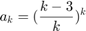
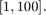
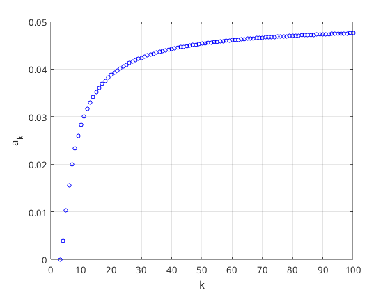
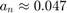
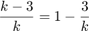
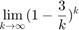
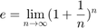
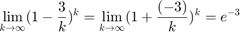
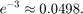

Beräkna tills den verkar konvergera, samt gränsvärde.

Jag bestämde mig för att skriva ett skript som beräknar mellan 
k_values = 1:100; a = zeros(size(k_values)); for i = 1:length(k_values) k = k_values(i); a(i) = exp(k * log((k - 3) / k)); end figure; plot(k_values, a, 'bo', 'MarkerSize', 4); hold on; xlabel('k'); ylabel('a_k'); grid on; axis([0 100, 0 0.05]); hold off;
Warning: Imaginary parts of complex X and/or Y arguments ignored.
Vi ser att konvergerar runt .
Detta går att bevisa algebraiskt

Så vi söker alltså

Nu ser den bekant ut, eftersom

så vi kan skriva om vår ekvation som

och
